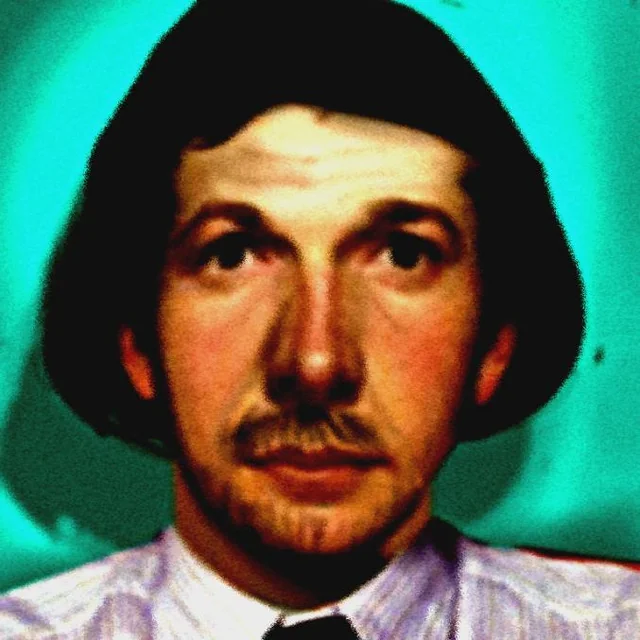

Charles Brooks was the computer supervisor for the unnamed bunny smiles resteraunt. He would also work alongside Susan. Charles and Susan would test the Cyberfun Console and aniamtronics with a walkaround with banny on January 21st. On May 13th, Charles would learn about the accident that killed edd and molly, from Susan. But Susan suspected that that wasn't the case, And felix was hiding the full truth...